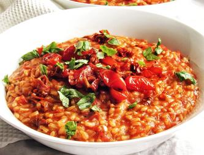

Description
A recipe to impress your vegan (or Italian!) friends.
- 5 min prep
- 25 min cook
Ingredients
- 250g arborio or carnaroli rice
- 1 onion, diced
- 4 cloves garlic, diced
- 500g tomatoes, crushed
- 1½tsp tomato paste
- 1l vegetable stock
- 50ml white wine
- capers
- cherry tomatoes, halved
- fresh basil leaves
- 1tsp thyme
- 1tsp sugar
- salt and pepper
Steps
- In a large pan, heat olive oil over medium-high heat and caramelize onion for 2 minutes. Add garlic and rice while stirring for 2 more minutes.
- Add wine and stir until the alcohol has evaporated. Add tomatoes, tomato paste, thyme, sugar, salt and pepper.
- Add a ladleful of the vegetable stock and stir continuously until the rice has absorbed the liquid. Continue with this process until you run out of stock or until the rice is soft and sticky.
- Remove pan from heat and add cherry tomatoes and basil leaves. Serve with capers.
Return to home